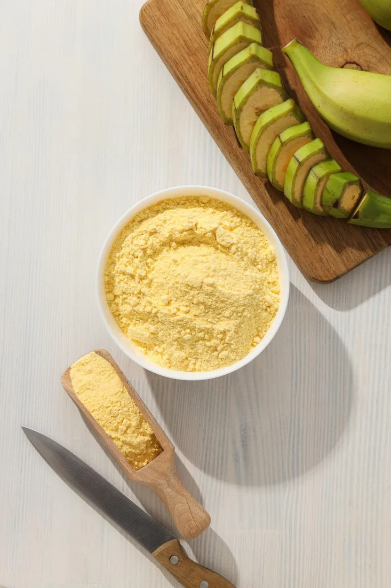
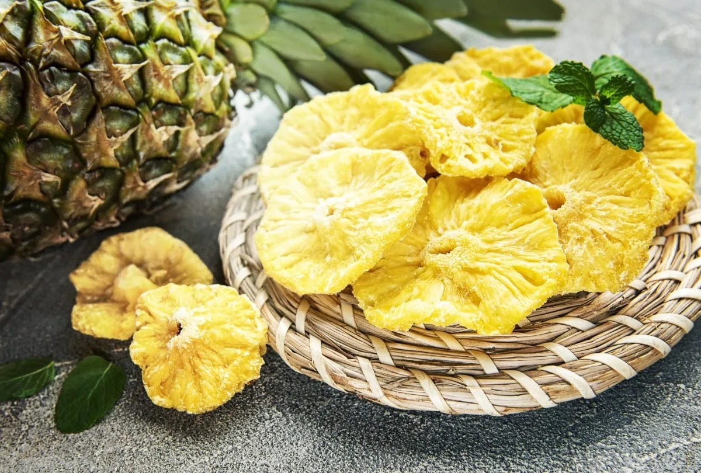
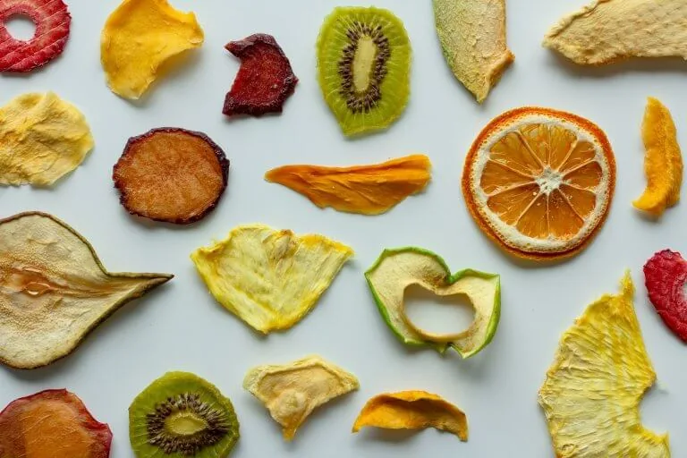

„Mit Liebe geerntet, mit der Welt geteilt“
DK Bio ist eine kamerunische Marke für lokale, nachhaltige Lebensmittel. Durch das Trocknen machen wir Lebensmittel länger haltbar und reduzieren Abfälle.

Unsere Marke
DK Bio verarbeitet landwirtschaftliche Erzeugnisse aus Kamerun zu getrockneten Lebensmitteln.
DK Bio entstand 2022 aus der Idee, Lebensmittelverschwendung in Kamerun zu verringern und dabei das Potenzial heimischer Erzeugnisse zu nutzen. Wir setzen auf die Vielfalt lokaler Produkte und auf nachhaltige Anbaumethoden.

.svg)
Innovation und Nachhaltigkeit prägen unsere Arbeit. Begleiten Sie DK Bio dabei, die Ernährung von morgen mitzugestalten.
Unsere Werte
- Innovation und Gesundheit
- Nachhaltigkeit und lokale Landwirtschaft
- Weniger Lebensmittelverschwendung
- Stärkung lokaler Gemeinschaften
Vision
„Wir wollen die Landwirtschaft zu einer Grundlage für Wohlstand in Kamerun machen, langfristige Arbeitsplätze schaffen und der nächsten Generation den Wert des lokalen Anbaus vermitteln. Indem wir die Vielfalt unserer Ernten nutzen und Lebensmittel möglichst vollständig verarbeiten, wollen wir die Abhängigkeit von Importen verringern und die Wirtschaft und die Gemeinschaften vor Ort stärken.“
Mission
„Bei DK Bio wollen wir Lebensmittelverschwendung verringern, langfristige Arbeitsplätze schaffen und die lokale Landwirtschaft in Kamerun stärken. Durch Verfahren wie das Trocknen machen wir aus regionalen Erzeugnissen nahrhafte, haltbare Lebensmittel. So unterstützen wir lokale Gemeinschaften und fördern wirtschaftliche Eigenständigkeit. Wir möchten jungen Menschen zeigen, dass die Landwirtschaft eine Perspektive bietet und zugleich zum Umweltschutz und zur Selbstversorgung des Landes beitragen kann.“
Logo und Bedeutung
- Pflanze: Wachstum, Erneuerung und Nachhaltigkeit.
- Braune Bodenlinie: Erde, Stabilität und Landwirtschaft.
- Der Name „DK Bio“ steht für unsere Herkunft (Dongmo Kafack) und den verantwortungsvollen Umgang mit der Umwelt.
- Unser Leitspruch: „Mit Liebe geerntet, mit der Welt geteilt“.
Unsere Produkte und Leistungen
Getrocknete Früchte
Das Trocknen bewahrt natürliche Aromen, Vitamine und Mineralstoffe.
Getrocknetes Gemüse
Ideal für Suppen, Eintöpfe und andere Gerichte.
Getrocknete Blätter
Getrocknete Gewürze
Mehle und Pulver
- Maniokmehl
- Pulver für fermentierten Getreidebrei
- Tomatenpulver
Trocknung auf Anfrage
Wir trocknen Obst, Gemüse, Blätter, Wurzelstöcke und Gewürze nach Bedarf.
Bringen Sie Ihre Erzeugnisse mit. Wir trocknen sie mit professionellen Geräten.
Preisliste
| Kategorie | Artikel | Menge | Preis |
|---|---|---|---|
| Gewürzpulver | Für Hähnchen | 500 g | 2000 FCFA |
| Gewürzpulver | Für Fisch | 500 g | 2000 FCFA |
| Mehle und Pulver | Maniokmehl | 1 kg | 7000 FCFA |
| Mehle und Pulver | Pulver für fermentierten Getreidebrei | 1 kg | 7500 FCFA |
| Mehle und Pulver | Tomatenpulver | 250 g | 3500 FCFA |
| Getrocknete Früchte | Ananas (pro Scheibe) | — | 80 FCFA |
| Getrocknete Früchte | Orange (pro Scheibe) | — | 40 FCFA |
| Getrocknete Früchte | Zitrone (pro Scheibe) | — | 40 FCFA |
| Gewürze | Chili | 1 kg | 7500 FCFA |
| Gewürze | Ingwer | 250 g | 3000 FCFA |
| Blätter | Minzblätter | 250 g | 3000 FCFA |
| Blätter | Ndolé (gewaschen, getrocknet und gebrauchsfertig) | 250 g | 3000 FCFA |
| Dienstleistung | Trocknung (für Produkte à 100 g) | — | 1000 FCFA |
Die Preise für getrocknete Früchte variieren je nach Wassergehalt und Trocknungsdauer.
Produkte und Verwendung

Pulver für Getreidebrei
Verwendung: für ein ausgewogenes Frühstück.
Vorteile: nahrhaft und für Familienmahlzeiten geeignet.

Getrocknete Früchte
Verwendung: für Cocktails mit Ananas, Orange oder Zitrone.
Beispiel: für Bars und Restaurants.

Maniokmehl
Verwendung: als glutenfreie Alternative.
Vorteile: kann Weizenmehl ersetzen.

Fruchtflocken
Verwendung: zum Knabbern oder als Zutat in Mahlzeiten.
Vorteile: nährstoffreich.
Ndolé-Blätter (gewaschen und getrocknet)
Verwendung: küchenfertige Blätter zum Kochen.
Vorteile: spart Zeit bei der Zubereitung traditioneller Gerichte.

Kochbananenmehl
Verwendung: zum Kochen und Backen.
Galerie
Frische und getrocknete Erzeugnisse.







Über die Geschäftsführerin
Als Geschäftsführerin von DK Bio vertrete ich eine Generation junger Menschen in Afrika, die mit Innovation und Nachhaltigkeit etwas verändern will. Meine Erfahrung im internationalen Geschäft hat mir gezeigt, wie dringend Kamerun Lösungen gegen Lebensmittelverschwendung und für einen besseren Umgang mit Ressourcen braucht.
DK Bio ist meine Antwort darauf. Wir trocknen Obst, Gemüse und Gewürze, um sie länger haltbar zu machen, ihren Nährwert zu erhalten und die lokale Wirtschaft zu unterstützen.
Ich möchte mit DK Bio zeigen, was afrikanischer Erfindergeist leisten kann, junge Menschen zum Gründen ermutigen und die Vielfalt unserer Produkte weltweit bekannt machen. Damit möchte ich zu einem eigenständigeren Afrika beitragen.
Unsere Vision ist es, Lebensmittelverschwendung zu verringern, lokale Gemeinschaften zu stärken und afrikanische Produkte weltweit bekannt zu machen.
Unterschrift: Patricia Dongmo Donfack
Kontakt
Contact.dkbio@gmail.com
+237 699 81 11 73
Gegenüber der Schule Le Petit Monde
Medien und Downloads

Datenschutz
Diese Website speichert Ihre Farbauswahl im Browser. Wenn Sie DK Bio per E-Mail oder Telefon kontaktieren, verwenden Sie Ihre eigene Anwendung und entscheiden selbst, welche Informationen Sie mitteilen.